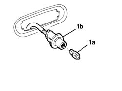

5550C54 (ONE), SIDE REPEATER BULB LEFT OR RIGHT - R.R.
- Path
- Procedures > 55 ELECTRICAL EQUIPMENT > 5550 WARNING AND MANOEUVRING INDICATORS > 5550C TURN SIGNAL/HAZARD WARNING LIGHTS > 5550C54 (ONE), SIDE REPEATER BULB LEFT OR RIGHT - R.R.
- Kind
- repair procedure (removal / refitting; the operation number is the code)
- Applies to
- all engines; production: da 06/04
- Interactive page
- https://sloeber94.github.io/elrnDB-fMltpl/en/#/186003549
Applies to: all engines; production: da 06/04
 Removing
Removing
 Refitting
Refitting- Extract the bulb (1a) from the bulb holder (1b) (press fit).

Applies to: all engines; production: da 06/04
Refitting
Removing- Check the condition of the bulb and make sure that it is clean.
- Fit the bulb in the bulb holder.
- Op. 5550C22 L/H OR R/H SIDE FLASHER (ONE) - R+R
- Check that the bulb is working.